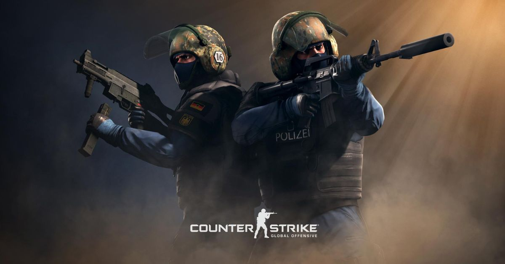
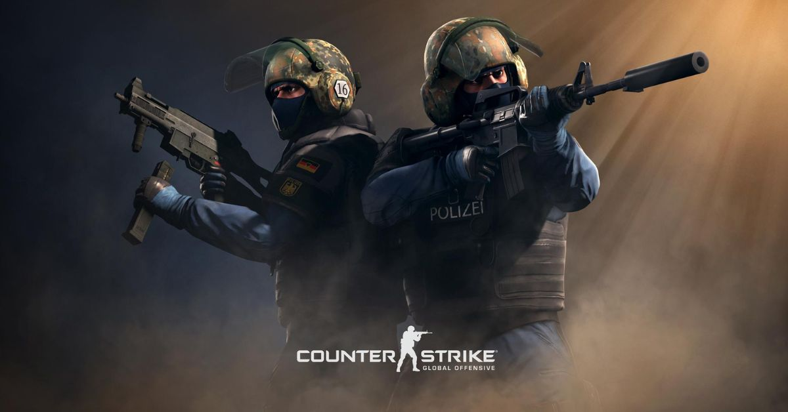
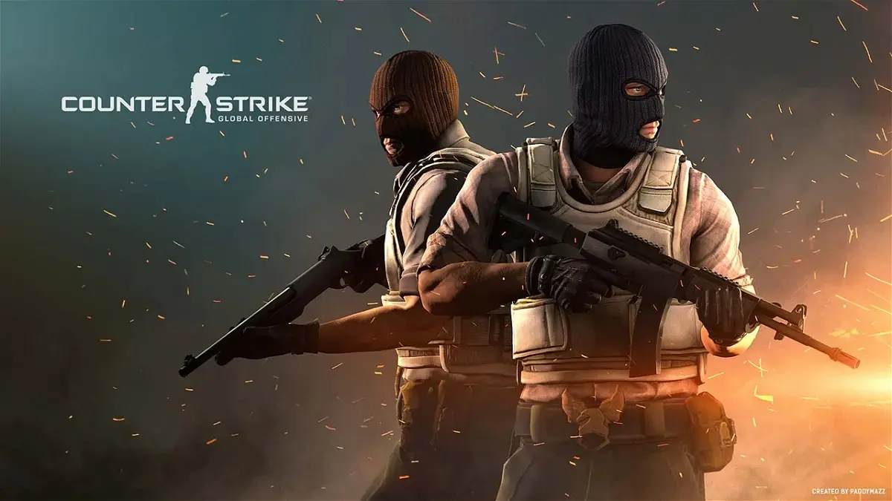
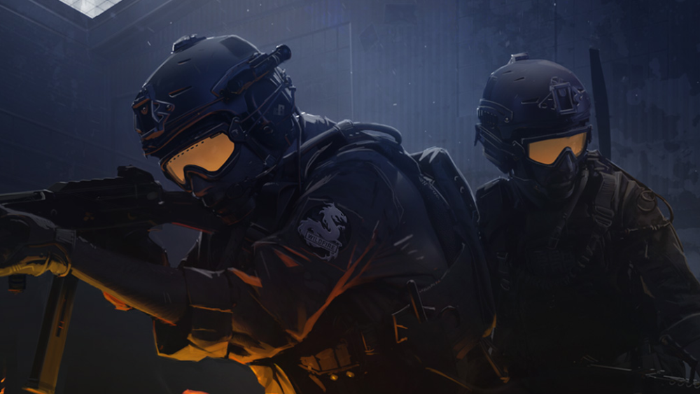
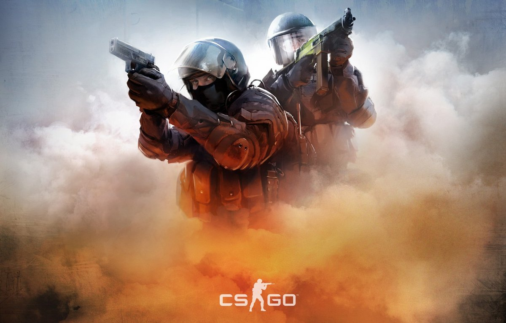
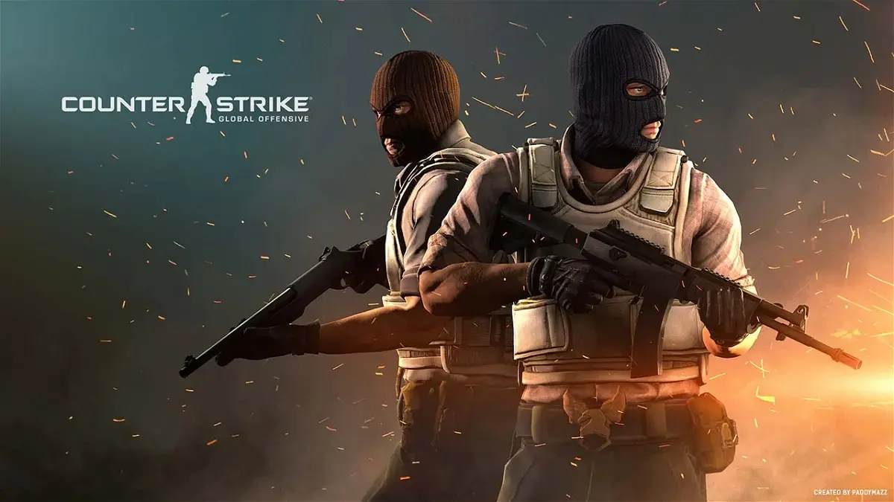
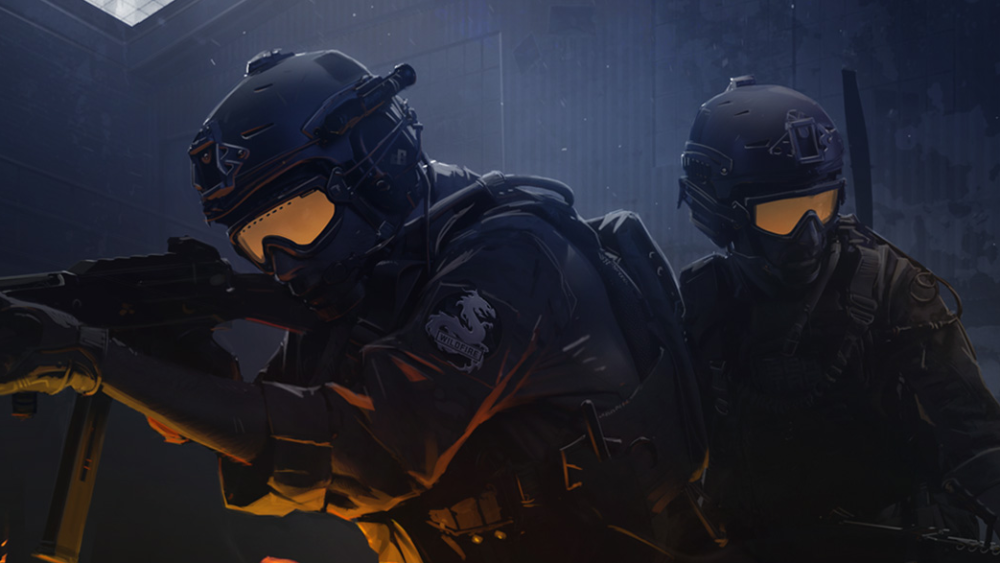
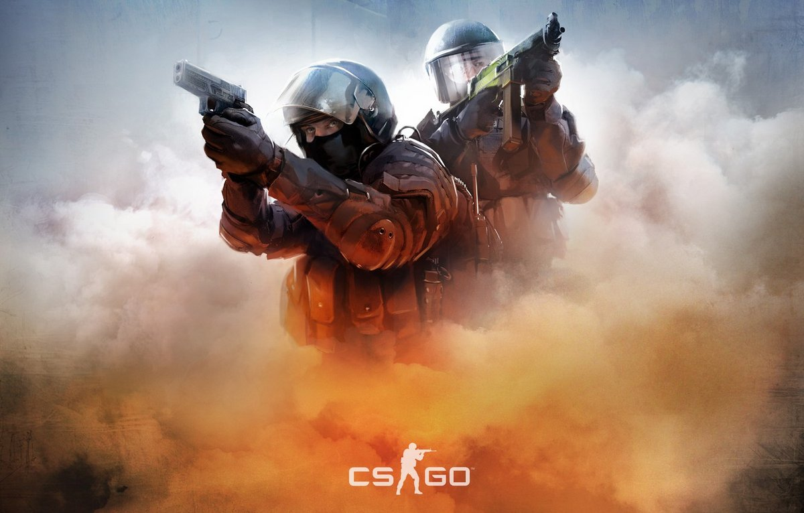

 





Counter-Strike: Global Offensive (CS:GO) é um jogo online desenvolvido pela Valve Corporation e pela Hidden Path Entertainment, sendo uma sequência de Counter-Strike: Source. É o quarto título principal da franquia. De acordo com o portal para o submundo, o Counter-Strike: Global Offensive foi o jogo mais vendido pelo Steam no Brasil, no ano de 2015. Segundo a matéria, brasileiros compraram mais de 205 mil cópias do jogo da Valve entre abril e dezembro de 2015.